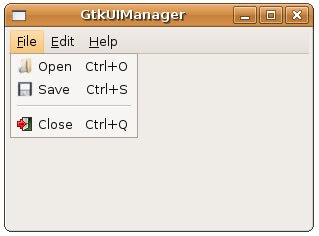

使用撰寫程式的方式來建構選單、工具列等使用者介面，過程有時過於繁瑣，您可以使用GtkUIManager從一個或多個使用者介面定義檔讀取介面定義，並自動建立相對應的Gtk元件，使用者介面定義檔是一個XML檔案。
舉個實際的例子來說，可以改寫一下 GtkMenuBar、GtkMenu 與 GtkMenuItem 中的範例，使用GtkUIManager與XML定義檔來作出相同的效果，若XML定義檔如下所示：
- gtk_ui_manager.xml
<ui>
<menubar name="MenuBar">
<menu action="File">
<menuitem action="Open"/>
<menuitem action="Save"/>
<separator/>
<menuitem action="Close"/>
</menu>
<menu action="Edit">
<menuitem action="Cut"/>
<menuitem action="Copy"/>
<menuitem action="Paste"/>
</menu>
<menu action="Help">
<menuitem action="About"/>
</menu>
</menubar>
</ui>"name"屬性可以讓您在建構程式的時候，依名稱來取得相對應的Gtk元件，而"action"將對應於GtkAction，您可以使用GtkActionEntry來建構GtkAction，GtkActionEntry的定義如下：
typedef struct {
const gchar *name;
const gchar *stock_id;
const gchar *label;
const gchar *accelerator;
const gchar *tooltip;
GCallback callback;
} GtkActionEntry;
const gchar *name;
const gchar *stock_id;
const gchar *label;
const gchar *accelerator;
const gchar *tooltip;
GCallback callback;
} GtkActionEntry;
第一個name成員即對應定義檔中的"name"屬性，其它則為圖示、文字、快速鍵、提示與callback函式，一個設定範例如下：
static GtkActionEntry entries[] = {
{ "File", NULL, "_File" },
{ "Open", GTK_STOCK_OPEN, "Open",
"<control>O", "Open File", G_CALLBACK(itemPressed)},
{ "Save", GTK_STOCK_SAVE, "Save",
"<control>S", "Save File", G_CALLBACK(itemPressed)},
{ "Close", GTK_STOCK_QUIT, "Close",
"<control>Q", "Close File", G_CALLBACK(gtk_main_quit)},
{ "Edit", NULL, "_Edit" },
{ "Cut", NULL, "Copy"},
{ "Copy", NULL, "Copy"},
{ "Paste", NULL, "Paste"},
{ "Help", NULL, "_Help" },
{ "About", NULL, "About" }
};
{ "File", NULL, "_File" },
{ "Open", GTK_STOCK_OPEN, "Open",
"<control>O", "Open File", G_CALLBACK(itemPressed)},
{ "Save", GTK_STOCK_SAVE, "Save",
"<control>S", "Save File", G_CALLBACK(itemPressed)},
{ "Close", GTK_STOCK_QUIT, "Close",
"<control>Q", "Close File", G_CALLBACK(gtk_main_quit)},
{ "Edit", NULL, "_Edit" },
{ "Cut", NULL, "Copy"},
{ "Copy", NULL, "Copy"},
{ "Paste", NULL, "Paste"},
{ "Help", NULL, "_Help" },
{ "About", NULL, "About" }
};
GtkAction被組織為GtkActionGrouop，定義了GtkActionEntry之後，您可以使用gtk_action_group_add_actions()函式將之加入GtkActionGroup之中：
gtk_action_group_add_actions(actionGroup, entries, 10, NULL);
接著建構GtkUIManager，並使用gtk_ui_manager_insert_action_group()加入GtkActionGroup，然後使用gtk_ui_manager_add_ui_from_file()讀取使用者介面定義檔：
GtkUIManager *ui = gtk_ui_manager_new();
gtk_ui_manager_insert_action_group(ui, actionGroup, 0);
gtk_ui_manager_add_ui_from_file(ui, "gtk_ui_manager.xml", NULL);
gtk_ui_manager_insert_action_group(ui, actionGroup, 0);
gtk_ui_manager_add_ui_from_file(ui, "gtk_ui_manager.xml", NULL);
GtkUIManager將會自動建構相對應的Gtk元件，並依"action"設定建立相對應的GtkAction。
若要從GtkUIManager中取得元件，則可以使用gtk_ui_manager_get_widget()並依"name"屬性之設定來取得，例如取得"MenuBar"並加入GtkVBox中：
GtkWidget *vbox = gtk_vbox_new(FALSE, 5);
gtk_box_pack_start(GTK_BOX(vbox),
gtk_ui_manager_get_widget(ui, "/MenuBar"), FALSE, FALSE, 2);
gtk_box_pack_start(GTK_BOX(vbox),
gtk_ui_manager_get_widget(ui, "/MenuBar"), FALSE, FALSE, 2);
下面的程式是個完整的範例：
- gtk_ui_manager_demo.c
#include <gtk/gtk.h>
void itemPressed(GtkMenuItem *menuItem, gpointer data) {
g_print("%s\n", gtk_action_get_name(GTK_ACTION(menuItem)));
}
static GtkActionEntry entries[] = {
{ "File", NULL, "_File" },
{ "Open", GTK_STOCK_OPEN, "Open",
"<control>O", "Open File", G_CALLBACK(itemPressed)},
{ "Save", GTK_STOCK_SAVE, "Save",
"<control>S", "Save File", G_CALLBACK(itemPressed)},
{ "Close", GTK_STOCK_QUIT, "Close",
"<control>Q", "Close File", G_CALLBACK(gtk_main_quit)},
{ "Edit", NULL, "_Edit" },
{ "Cut", NULL, "Copy"},
{ "Copy", NULL, "Copy"},
{ "Paste", NULL, "Paste"},
{ "Help", NULL, "_Help" },
{ "About", NULL, "About" }
};
int main(int argc, char *argv[]) {
GtkWidget *window;
GtkActionGroup *actionGroup;
GtkUIManager *ui;
GtkWidget *vbox;
gtk_init(&argc, &argv);
window = gtk_window_new(GTK_WINDOW_TOPLEVEL);
gtk_window_set_title(GTK_WINDOW(window), "GtkUIManager");
gtk_window_set_default_size(GTK_WINDOW(window), 300, 200);
actionGroup = gtk_action_group_new("Actions");
gtk_action_group_add_actions(actionGroup, entries, 10, NULL);
ui = gtk_ui_manager_new();
gtk_ui_manager_insert_action_group(ui, actionGroup, 0);
gtk_ui_manager_add_ui_from_file(ui, "gtk_ui_manager.xml", NULL);
vbox = gtk_vbox_new(FALSE, 5);
gtk_box_pack_start(GTK_BOX(vbox),
gtk_ui_manager_get_widget(ui, "/MenuBar"), FALSE, FALSE, 2);
gtk_container_add(GTK_CONTAINER(window), vbox);
g_signal_connect(GTK_OBJECT(window), "destroy",
G_CALLBACK(gtk_main_quit), NULL);
gtk_widget_show_all(window);
gtk_main();
return 0;
}一個執行的畫面如下所示：

更詳細的GtkUIManager使用，可以參考文件 GtkUIManager，或是gtk-demo中的UI Manager範例。